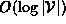
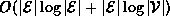
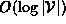
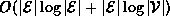
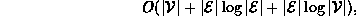
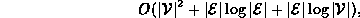

Data Structures and Algorithms
with Object-Oriented Design Patterns in C++
Data Structures and Algorithms
with Object-Oriented Design Patterns in C++
The KruskalsAlgorithm routine begins by creating
an graph to hold the result spanning tree (lines 3-7).
Since a spanning tree is a sparse graph
the GraphAsLists class is used to represent it.
Initially the graph contains  vertices but no edges.
The running time for lines 3-7 is
vertices but no edges.
The running time for lines 3-7 is  .
.
Next all of the edges in the input graph
are inserted one-by-one into the priority queue (lines 9-18).
Since there are  edges,
the worst-case running time for a single insertion is
edges,
the worst-case running time for a single insertion is  .
Therefore, the worst-case running time to initialize the priority queue is
.
Therefore, the worst-case running time to initialize the priority queue is

when adjacency lists are used, and

when adjacency matrices are used to represent the input graph.
The main loop of the routine comprises lines 21-36.
This loop is done at most  times.
In each iteration of the loop,
one edge is removed from the priority queue (lines 23-25).
In the worst-case this takes
times.
In each iteration of the loop,
one edge is removed from the priority queue (lines 23-25).
In the worst-case this takes  time.
time.
Then, two partition find operations are done
to determine the elements of the partition
that contain the two end-points of the given edge (lines 26-29).
Since the partition contains at most  elements,
the running time for the find operations is .
If the two elements of the partition are distinct,
then an edge is added to the spanning tree
and a join operation is done to unite
the two elements of the partition (lines 30-34).
The join operation also requires time in the worst-case.
Therefore, the total running time for the main loop
is .
elements,
the running time for the find operations is .
If the two elements of the partition are distinct,
then an edge is added to the spanning tree
and a join operation is done to unite
the two elements of the partition (lines 30-34).
The join operation also requires time in the worst-case.
Therefore, the total running time for the main loop
is .
Thus, the worst-case running time for Kruskal's algorithm is

when adjacency lists are used, and

when adjacency matrices are used to represent the input graph.
 Copyright © 1997 by Bruno R. Preiss, P.Eng. All rights reserved.
Copyright © 1997 by Bruno R. Preiss, P.Eng. All rights reserved.